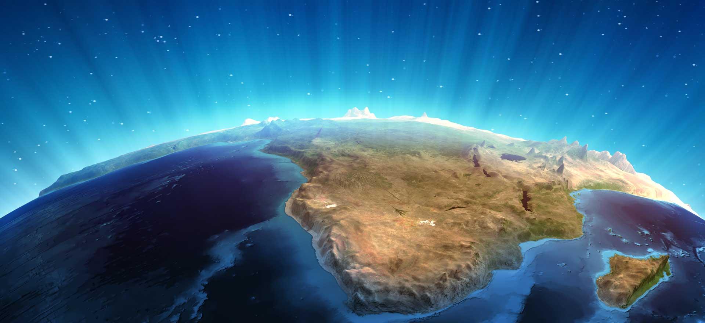

Concepto
Entendemos por Geografía a aquella ciencia que se interesa por el análisis de los fenómenos relacionados con la Tierra, tanto desde un punto de vista natural como humano. Es por esto que para la Geografía no sólo es importante todo lo que tenga que ver con la superficie, los elementos naturales y territoriales, si no también con la población que habita esos territorios y la adaptación a diferentes tipos de espacios.Proveniente del griego, la palabra Geografía significa "descripción de la Tierra", y es así que esta ciencia se preocupará por describir y analizar diferentes aspectos relacionados con nuestro planeta. Para realizar tal análisis se puede recurrir a diversos enfoques que harán variar el objeto de estudio o el interés.
Con el avance de la tecnología y los geo localizadores al alcance de todos, cada vez menos personas se interesan en su estudio, lo cierto es que esta ciencia estudia a detalle lo que pasa en el planeta respecto a sus condiciones climáticas, orográficas y los diferentes fenómenos naturales. Incluye el análisis espacial de los fenómenos humanos y naturales, la exploración de las ciencias de la tierra, y el estudio de la relación entre la naturaleza y la vida humana. También analiza los procesos sociales, económicos y ambientales que afectan al medio ambiente. ¿No te parece que es importante saber sobre ella a profundidad?.
importancia de la Geografia
Geografía física | Geografía Humana | Geografía RegionalLa geografía general es una rama de la geografía y se puede definir como el estudio de las diferencias y los cambios de características, localizaciones de los fenómenos geográficos y sus relaciones con el entorno natural y la acción con el ser humano. Se suele subdividir en dos grandes ramas: la geografía física y la geografía humana.